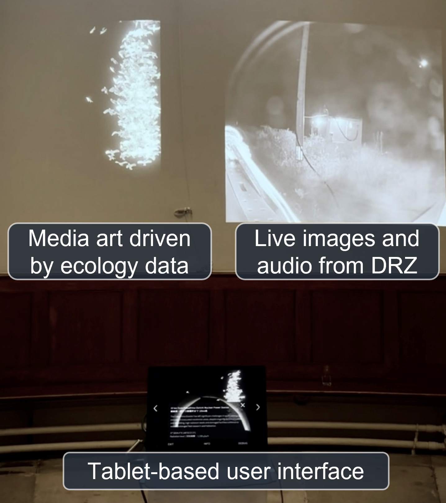
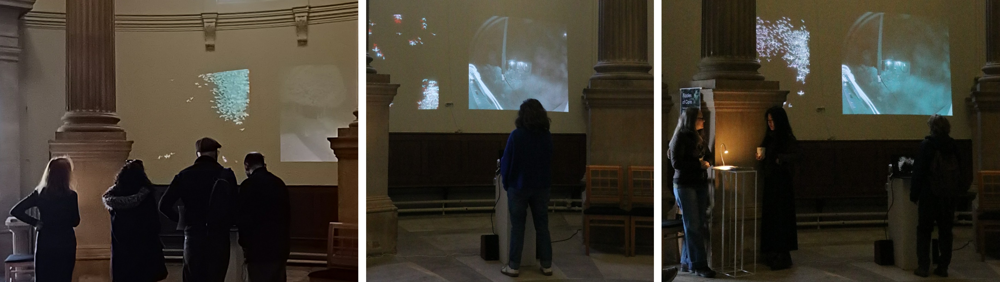

Ripples of Care: Telepresence in Post-Disaster Landscape
Keywords: Collaborative Art; Interactive Installation; Remote Witnessing
• 2024/02 - 2025/11
This project conducted an open exhibition in London, connecting audiences with the remote post-disaster landscape of Fukushima through an interactive installation.
Concept
Background
In the "Difficult-to-Return" zones in Fukushima, Japan, extreme physical and social inaccessibility impose a vast psychological distance. While human absence has been a defining characteristic of these zones, animals have continued to inhabit and adapt to the post-disaster environment.
However, the public's perception of these animals is often limited to abstract knowledge, fostering emotional detachment and indifference. This project seeks to bridge this gap through telepresence technologies.
Objectives
- Support remote engagement with a physically inaccessible, psychologically distant post-disaster environment.
- Facilitate collaborative narrative between humans outside the disaster zone and animals in the radioactive environment.
Technical Approach
- Hybrid network with fixed nodes + wearable sensors
- Cameras (AXIS P3715-PLVE), microphones, amplifiers
- LED screens + speakers deliver visual/auditory cues
- LPWAN for sensors; satellite Internet in exclusion zone
- Unity3D-based application for stimulus control and visualization

Devices on exhibition siteOutputs
Field Evaluation
- 150 participants visited the venue and 60 of them provided feedback (November 30, 2025)
- Qualititative responses were collected through contemporaneous field notes during unstructured interviews.
- After the event, the group had bi-weekly meetings to actively reflect on user feedback and construct thematic results.
Findings
- People perception toward DRZ changes from abstract curiosity to more concrete understanding and situated concerns.
- Minimally curated live experience can support more concrete and situated perception.
- Distributed agencies encourage empathetic imagination and ethical reflection.
Publication
-
H. Hong, N. Binyamini Ben-Meir, M. Oka, H. H. Kobayashi. (2026)
"Mediated Ecology in Fukushima: Decentralized Storytelling and Collaborative Telepresent Experience Beyond the Post-Disaster Landscape", Frontiers in Human Dynamics, Vol. 8, 1800722. -
N. Binyamini Ben-Meir, H. Hong, M. Oka, K. Clarke, S. Masters, P. Healey, H. H. Kobayashi(2026)
"Mediating More-Than-Human Encounters Across Spatio-Temporal Distance", In Proceedings of the 15th Nordic Conference on Human-Computer Interaction (NordiCHI '26) [Accepted]
Gallery
